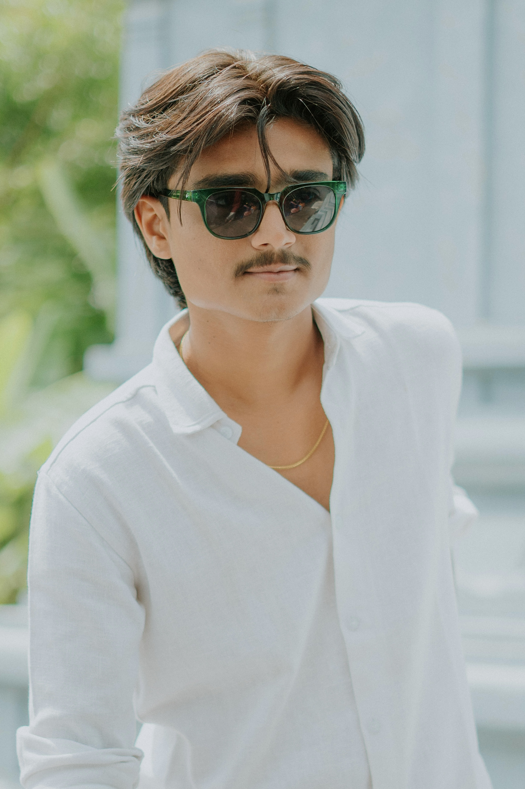

Tap & Watch

Noor And Ramu
Shot the beautiful amalgamation of a Gujarati Muslim family with a Telugu Brahmin family.
Watch Now
Pranav And Charvi
Shot a dreamy video for Pranav & Charvi among the splendid Kerala valleys.
Watch Now


About Me
Hello! I am Kushal Patel, an Ahmedabad based Wedding Cinematographer. Being an emotional person, my work is a direct reflection of what my clients feel. It is not the grandeur of the wedding that excites me, it is the aura that brings out the best in me. Tea is the fuel that keeps me going and sky gazing lights up my mood.
Bio
Apart from weddings and pre-weddings, in my three years of experience in the field, I have shot conceptual videos, maternity videos, engagements, live music concerts and stand-up comedy shows, press conferences, music videos and brand promotional videos. I hold an expertise in using tools like Final Cut Pro and DaVinci Resolve for editing videos.
Inside my Kitbag
- Sony FX3
- Lenses: Sigma 35 1.4 , Sigma 85 1.4
- Ronin RS2
- Boya Mic
- Nanlite Mix Wand 18 II, Simpex Video Light.
- ND & Polarizer Filter
Hit me up!
Let's discuss more over a cup of tea.
Contact : +91 7778081672
Email : kushalpatel380@gmail.com
Instagram : @cinematickushal